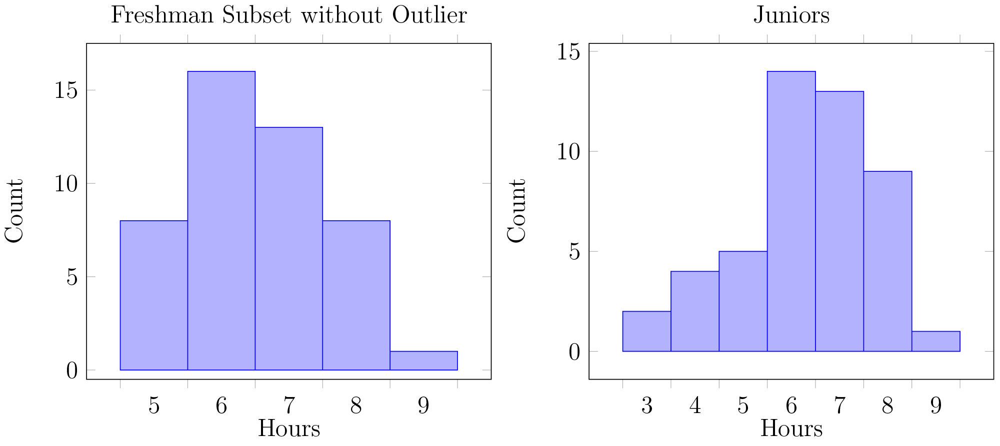

Survey with two questions: Grade Level and Mean Hours of Sleep
Four populations were sampled: Freshmen, Sophomores, Juniors, and Seniors
Sampling Method:
Cluster sample; 9 classes selected randomly using true random number generator
Only data from Freshmen and Juniors were kept
50 data were required from both Freshmen and Juniors
Surveys with obviously unrealistic results were not considered — for example, no hours of sleep
Randomization: Classes were randomly selected using TRG
10% Conditions: The freshmen sample satisfy this conditon if a randomly selected subset of \(n = 50 \) data is selected; the Juniors satisfy this condition
Nearly Normal: 
Independence Conditions: Assume that Juniors and Sophomores are independent, and that each student from each class is independent(That's right! No one has friends!)
Data is categorized into two categories:
\( \mu \geq 8 \) — required amount of sleep for teenager
\( \mu < 8 \) — less than the required amount
There are two populations(Freshmen and Juniors) and one variable(Average sleep time), therefore \( \chi^2 \) test of homogeneity is used
Counted Data: Since the data was categorized, we have counted data
Randomization: A TRG was used to randomly select classes
Expected Cell Frequency:
We used an \( \alpha = 0.05 \)
\( p_t = 0.065 > \alpha = 0.05 \) and \( p_{\chi^2} = 0.161 > \alpha = 0.05 \), so we fail to reject the null hypothesis
There isn't enough evidence to suggest Freshmen get more sleep than juniors
It appears that both Freshmen and Juniors get the same amount of sleep
A study found that approximately 20% of Seniors had more sleep deficits than Freshmen
This may suggest that there were errors in our study
THIS IS THE LINK \( \Rightarrow \) http://goo.gl/1DgejY